| Nome completo | RM |
|---|---|
| Davi Passanha de Sousa Guerra | RM551605 |
| Cauã Gonçalves de Jesus | RM97648 |
| Luan Silveira Macea | RM98290 |
| Rui Amorim Siqueira | RM98436 |
| Luigi Ferrara Sinno | RM98047 |
| Nome completo | RM |
|---|---|
| Davi Passanha de Sousa Guerra | RM551605 |
| Cauã Gonçalves de Jesus | RM97648 |
| Luan Silveira Macea | RM98290 |
| Rui Amorim Siqueira | RM98436 |
| Luigi Ferrara Sinno | RM98047 |
O SeguWatts mostra ao morador quando e onde a casa gasta energia, quanto isso custa e qual aparelho pode estar com defeito, antes que o problema apareça na conta.
Cidadão: famílias de renda baixa e média no estado de São Paulo, para quem a conta de luz pesa no orçamento. ODS: 10 (redução das desigualdades), 11 (cidades sustentáveis) e 13 (ação climática).
| # | Pergunta do cidadão | Consulta |
|---|---|---|
| 1 | Em que dia da semana e horário minha casa gasta mais? | q1 |
| 2 | Como meu gasto muda de mês para mês, com o calor e a bandeira tarifária? | q2 |
| 3 | Qual aparelho pesa mais na minha conta? | q3 |
| 4 | Algum aparelho está gastando mais do que deveria? | q4 |
| 5 | Quanto eu economizo se resolver esses problemas? (impacto) | q5 |
Como a casa é medida: um sensor geral no quadro de energia e sensores de tomada em até três aparelhos críticos (geladeira, freezer e ar-condicionado), todos com leitura por hora, mais a conta de luz e o cadastro de aparelhos. O consumo dos demais aparelhos é o sensor geral menos as tomadas, e cada aparelho sem sensor recebe uma parte da conta proporcional a potência × horas de uso declaradas.
O Databricks Free Edition não se conecta ao Airflow. Por isso os arquivos de chegada/ sobem ao Volume
pela interface, em lotes. Como o navegador limita o tamanho de cada envio, cada lote foi compactado
(scripts/compactar_lotes.py) e o notebook 00b_extrair_lote recria as pastas dentro do Volume.
| Fonte | Origem | Formato | Frequência | Tipo |
|---|---|---|---|---|
| clima | Open-Meteo Archive API (6 municípios de SP) | JSON | Diária | Externa real |
| tarifas | ANEEL Dados Abertos: tarifas B1 residenciais | JSON | Diária | Externa real |
| bandeiras | ANEEL Dados Abertos: acionamento de bandeiras | JSON | Diária | Externa real |
| municipios | IBGE API de Localidades | JSON | Diária | Externa real |
| sensores | Simulador documentado (leituras horárias) | JSON | Diária | Simulada |
| contas | Simulador documentado (contas de luz) | JSON | Diária | Simulada |
| cadastro | Simulador documentado (moradores e aparelhos) | JSON aninhado | Diária | Simulada |
Por que há dados simulados: não existe base aberta de consumo por residência, e dados pessoais reais não
podem ser publicados. O simulador (dags/seguwatts/simulador.py) é reproduzível pela semente, faz a geladeira e
o ar-condicionado reagirem à temperatura real do Open-Meteo, usa identidades claramente fictícias e injeta sujeira
proposital e defeitos registrados num gabarito, que permitem medir se a detecção funciona.
Quatro fontes externas reais (Open-Meteo, ANEEL tarifas, ANEEL bandeiras e IBGE) e três simuladas, todas ligadas ao problema: consumo, custo da energia e clima. Cada fonte tem uma tarefa própria no DAG.
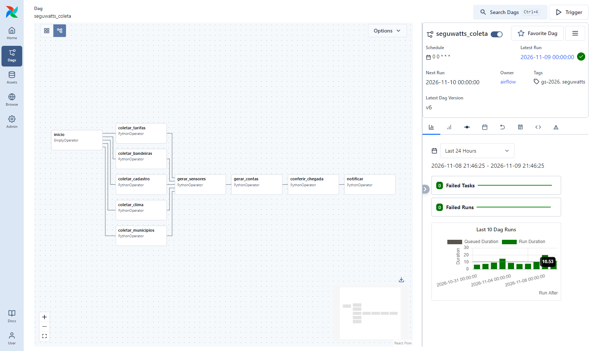
seguwatts_coleta no Airflow 3: uma tarefa de coleta por fonte.">seguwatts_coleta no Airflow 3: uma tarefa de coleta por fonte.O DAG roda @daily com catchup, coleta o dia anterior e grava um arquivo por fonte com a data no nome, por exemplo chegada/clima/clima_2026-11-08.json. O histórico de 01/05 a 24/10 foi gerado pelas mesmas funções (scripts/carga_historica.py); o DAG executou de 25/10 a 08/11, com 15 execuções concluídas.
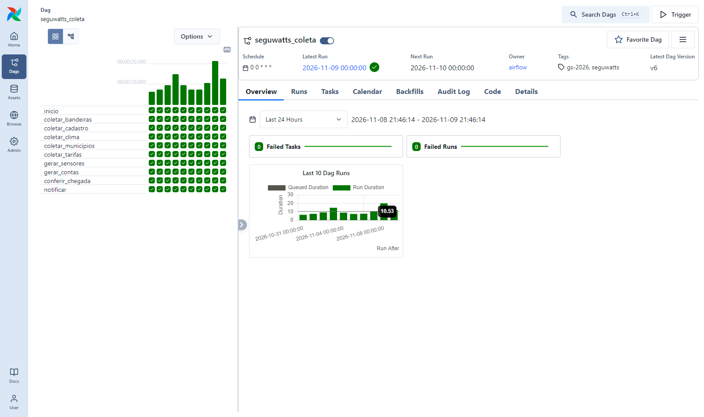
As cinco coletas rodam em paralelo depois de inicio (Figura 1). conferir_chegada falha se faltar algum arquivo do dia ou se uma fonte obrigatória vier vazia, e notificar roda sempre (all_done), enviando o resultado ao webhook configurado. As fontes usadas não exigem chave de API; mesmo assim, toda configuração sensível fica em Airflow Variables, nunca no código:
def _pasta_chegada() -> str:
return Variable.get("seguwatts_chegada", default="/opt/airflow/chegada")
def _enviar_aviso(texto: str):
url = Variable.get("seguwatts_webhook_url", default="")Lote 1: dias de 01/05 a 31/10 (585 arquivos, em 2 partes compactadas). Lote 2: dias de 01/11 a 08/11 (56 arquivos). Cada lote foi enviado pela interface e extraído no Volume em momentos diferentes.
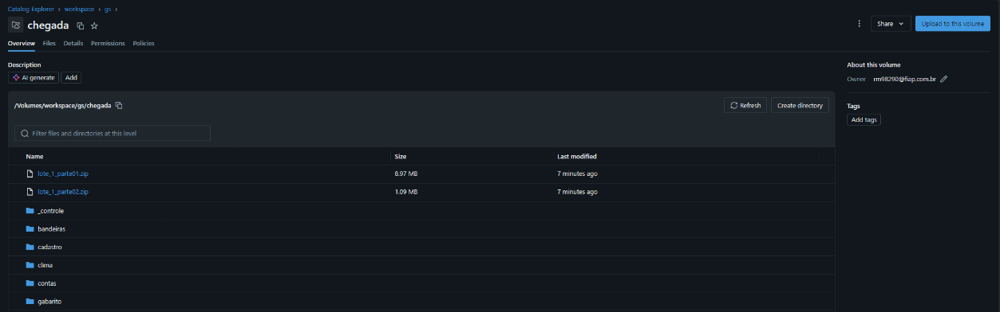
workspace.gs.chegada com o lote 1 enviado e as pastas por fonte já extraídas.">workspace.gs.chegada com o lote 1 enviado e as pastas por fonte já extraídas.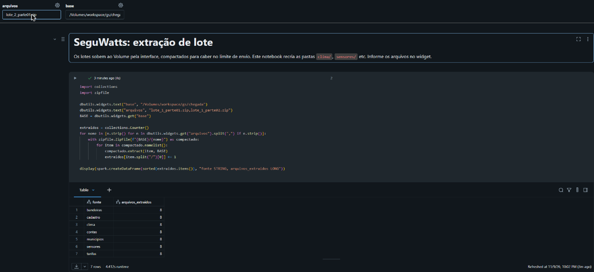
Auto Loader (cloudFiles, availableNow) com checkpoint por fonte: só arquivos novos entram. As contagens antes e depois do 2º lote e da reexecução estão na seção 07.
Cada tabela recebe tipos corretos (try_cast, vírgula decimal convertida), remove duplicatas pela chave e faz MERGE. Dezesseis regras com contagem: as linhas barradas vão para prata_rejeitos e os totais para prata_qualidade. Em prata_leituras, por exemplo, foram barradas 4.921 leituras sem kWh válido, 3.386 fora da faixa de 0 a 15 kWh/h, 192 de residência inexistente e 192 de ponto de medição inexistente.
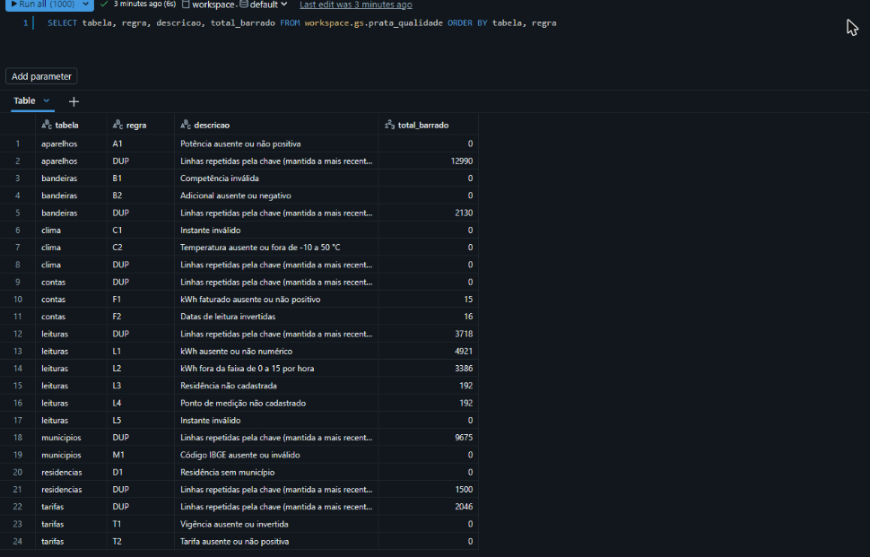
prata_qualidade: total barrado por regra e linhas repetidas removidas.">prata_qualidade: total barrado por regra e linhas repetidas removidas.Fato fato_consumo_hora (residência × aparelho × hora, 1,2 milhão de linhas) e dimensões dim_data, dim_localidade, dim_residencia e dim_aparelho, além do fato fato_rateio_ciclo. O fato guarda as tomadas e as demais cargas, nunca o sensor geral junto, para não somar nada em dobro. As consultas estão na seção 08.
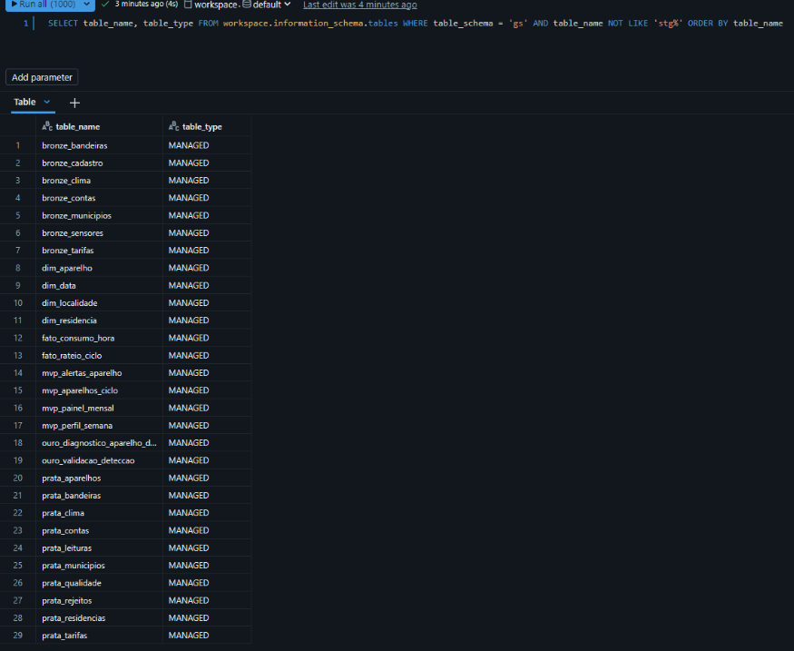
workspace.gs: Bronze, Prata, dimensões, fatos e tabelas do MVP.">workspace.gs: Bronze, Prata, dimensões, fatos e tabelas do MVP.Na Ouro não há nome, CPF, e-mail, telefone nem o identificador original. Titular e residência viram SHA-256 com sal; o sal fica no secret, no widget ou num arquivo gerado no Volume, nunca no repositório. O MVP consome apenas as tabelas mvp_*, exportadas em JSON (contrato em docs/contrato_mvp.md).
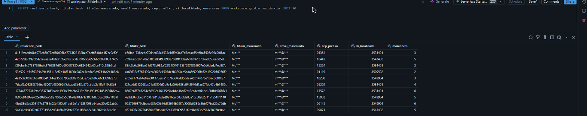
dim_residencia: identificadores em hash, titular e e-mail mascarados, CEP com 5 dígitos.">dim_residencia: identificadores em hash, titular e e-mail mascarados, CEP com 5 dígitos.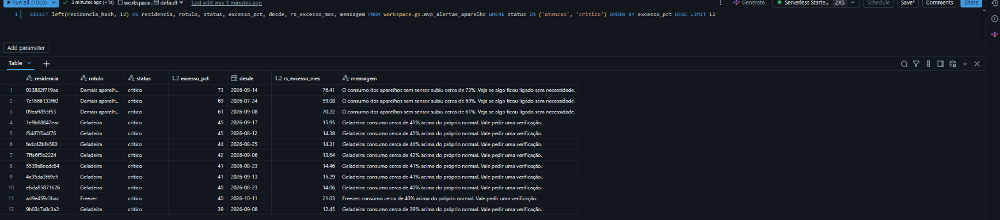
mvp_alertas_aparelho, tabela da Ouro usada pela tela de alertas.">mvp_alertas_aparelho, tabela da Ouro usada pela tela de alertas.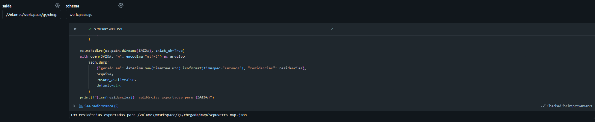
mvp_* para o JSON consumido pela tela.">mvp_* para o JSON consumido pela tela.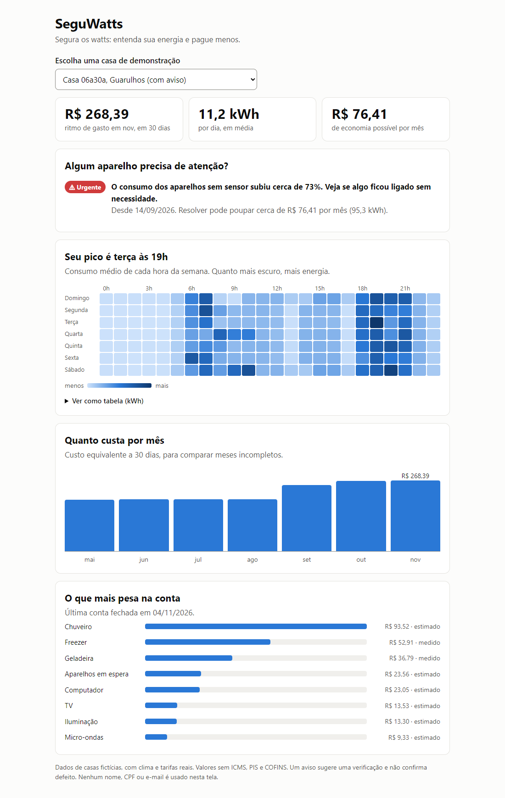
Repositório público em https://github.com/luanmacea/seguwatts-bigdata, com dags/, databricks/, amostras/, mvp/, testes e README com integrantes, arquitetura e passo a passo de reprodução. Sem chaves, senhas ou dados pessoais reais.
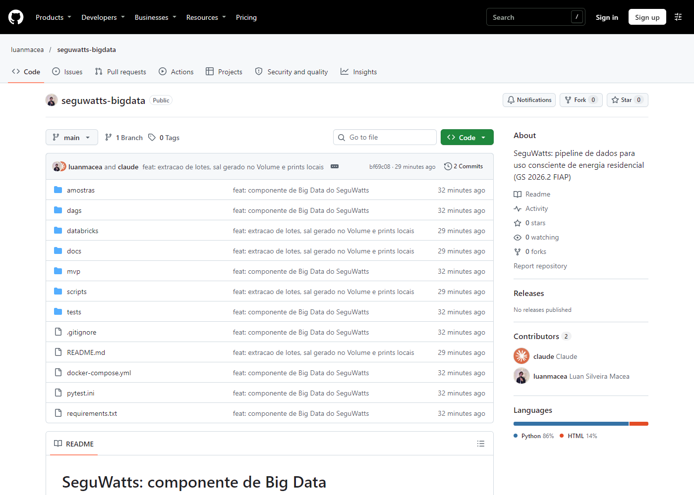
inicio, cinco coletas em paralelo, sensores, contas, conferência e notificação.| Momento | bronze_sensores | bronze_clima | bronze_contas | Arquivos de sensores |
|---|---|---|---|---|
| Depois do lote 1 | 1.183.854 | 1.104 | 508 | 184 |
| Depois do lote 2 | 1.235.331 | 1.152 | 532 | 192 |
| 3ª execução, sem lote novo | 1.235.331 | 1.152 | 532 | 192 |
O lote 2 acrescentou só os 8 dias novos, e a execução sem lote novo não mudou nenhuma contagem: a Bronze é incremental e não duplica.
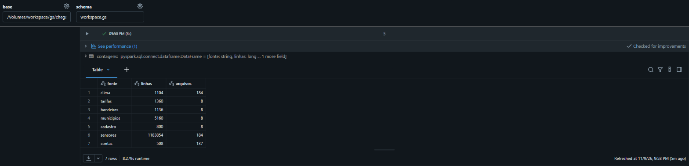
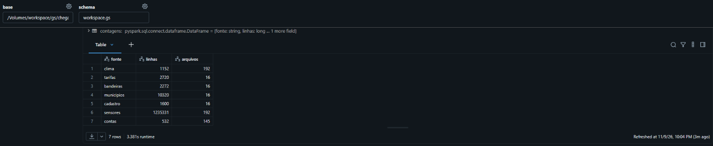
-- q1: Em que dia da semana e horário as casas gastam mais? SELECT dia_semana, hora, round(avg(kwh_medio), 3) AS kwh_medio_por_casa FROM workspace.gs.mvp_perfil_semana GROUP BY dia_semana, hora ORDER BY kwh_medio_por_casa DESC LIMIT 10;
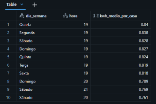
O pico é às 19h em todos os dias da semana, com 0,84 kWh por casa na quarta-feira. O início da noite concentra banho, TV e iluminação, e é o melhor horário para orientar mudanças de hábito.
-- q2: Como o gasto muda de mês para mês, com o calor e a bandeira?
SELECT p.ano_mes,
first(p.bandeira) AS bandeira,
round(avg(p.temperatura_media), 1) AS temperatura_media,
round(avg(p.kwh_total / p.dias_medidos), 2) AS kwh_dia_por_casa,
round(avg(p.custo_rs / p.dias_medidos) * 30, 2) AS custo_30_dias_por_casa
FROM workspace.gs.mvp_painel_mensal p
GROUP BY p.ano_mes
ORDER BY p.ano_mes;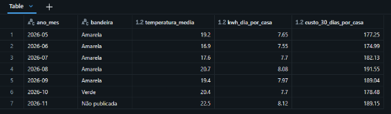
O consumo vai de 7,55 kWh/dia por casa em junho a 8,12 em novembro. A variação é pequena porque o calor aumenta geladeira e ar-condicionado e o frio aumenta o chuveiro. A bandeira amarela de maio a setembro encareceu o kWh; a de novembro ainda não foi publicada pela ANEEL.
-- q3: Qual aparelho pesa mais na conta? Medido na tomada ou estimado pelo rateio.
SELECT a.rotulo,
f.origem_medicao,
round(sum(f.kwh), 0) AS kwh_total,
round(sum(f.custo_rs), 2) AS custo_total_rs,
round(100 * sum(f.kwh) / sum(sum(f.kwh)) OVER (), 1) AS participacao_pct
FROM workspace.gs.fato_rateio_ciclo f
JOIN workspace.gs.dim_aparelho a USING (sk_aparelho)
GROUP BY a.rotulo, f.origem_medicao
ORDER BY kwh_total DESC;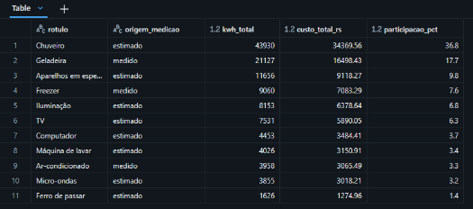
O chuveiro responde por 36,8% do consumo (estimado) e a geladeira por 17,7% (medido). O chuveiro é o maior peso, mas a geladeira é o maior consumo medido e o alvo mais claro de manutenção.
-- q4: Quais aparelhos estão gastando mais do que deveriam?
SELECT rotulo, status, count(*) AS aparelhos, round(avg(excesso_pct), 0) AS excesso_medio_pct,
round(avg(rs_excesso_mes), 2) AS rs_excesso_medio_mes
FROM workspace.gs.mvp_alertas_aparelho
GROUP BY rotulo, status
ORDER BY rotulo, status;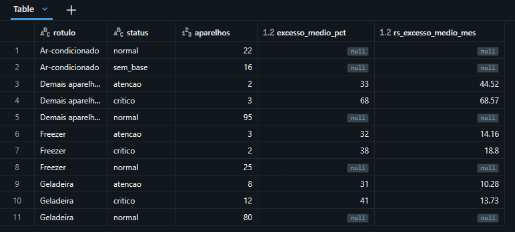
Há alertas em 20 geladeiras, 5 freezers e 5 casas com consumo sem explicação nos aparelhos sem sensor. Cada aparelho é comparado com ele mesmo nos 30 primeiros dias de uso, descontando a temperatura. Os 16 aparelhos de ar-condicionado sem 30 dias de uso ficam como sem_base e não geram alerta sem fundamento.
-- q5 (IMPACTO): Quanto as famílias economizam resolvendo os problemas apontados?
WITH alertas AS (
SELECT residencia_hash, sum(kwh_excesso_mes) AS kwh_mes, sum(rs_excesso_mes) AS rs_mes
FROM workspace.gs.mvp_alertas_aparelho
WHERE status IN ('atencao', 'critico')
GROUP BY residencia_hash
),
ultimo_mes AS (
SELECT residencia_hash, kwh_total / dias_medidos * 30 AS kwh_30_dias
FROM workspace.gs.mvp_painel_mensal
WHERE ano_mes = (SELECT max(ano_mes) FROM workspace.gs.mvp_painel_mensal)
)
SELECT count(*) AS casas_com_alerta,
round(sum(a.kwh_mes), 1) AS kwh_evitaveis_mes,
round(sum(a.rs_mes), 2) AS rs_evitaveis_mes,
round(sum(a.rs_mes) * 12, 2) AS rs_evitaveis_ano,
round(avg(a.rs_mes), 2) AS economia_media_por_casa_mes,
round(100 * sum(a.kwh_mes) / sum(u.kwh_30_dias), 1) AS reducao_pct_nessas_casas
FROM alertas a
JOIN ultimo_mes u USING (residencia_hash);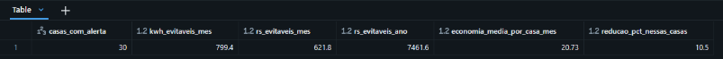
30 casas com alerta poderiam deixar de gastar 799,4 kWh e R$ 621,80 por mês (R$ 7.461,60 por ano), em média R$ 20,73 por casa, uma redução de 10,5% no consumo dessas famílias.
-- q6 (validação): A detecção encontra as falhas injetadas pelo simulador?
WITH total AS (
SELECT count_if(resultado = 'verdadeiro_positivo') AS vp,
count_if(resultado = 'falso_positivo') AS fp,
count_if(resultado = 'falso_negativo') AS fn,
count_if(resultado = 'verdadeiro_negativo') AS vn,
round(avg(dias_ate_detectar), 1) AS dias_medios_ate_detectar
FROM workspace.gs.ouro_validacao_deteccao
)
SELECT vp, fp, fn, vn,
round(100 * try_divide(vp, vp + fp), 1) AS precisao_pct,
round(100 * try_divide(vp, vp + fn), 1) AS cobertura_pct,
dias_medios_ate_detectar
FROM total;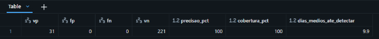
Foram 31 falhas detectadas, nenhum alarme falso e nenhuma perdida, em média 9,9 dias após o início. Uma das 32 falhas injetadas não pôde ser avaliada por falta de 30 dias de uso. Esse resultado vale para dados simulados, em que os defeitos são nítidos; em uso real, a taxa tende a ser menor.
O pipeline coleta quatro fontes reais e três simuladas no Airflow, envia lotes ao Volume e trata os dados em camadas no
Databricks. A Bronze é incremental e não duplica. A Prata tipa, deduplica, aplica dezesseis regras de qualidade com contagem e faz
MERGE. A Ouro entrega um modelo dimensional sem contagem dupla, protege dados pessoais com hash e máscara e alimenta a tela
do cidadão pelas tabelas mvp_*.
Decisões principais: sensores híbridos, porque um sensor geral lendo por hora não separa o consumo por aparelho; detecção explicável, que compara cada aparelho com ele mesmo e sugere verificação em vez de afirmar defeito; e LGPD aplicada na Ouro.
Limitações: sensores, contas e cadastro são simulados; o custo não inclui ICMS, PIS e COFINS; e um aparelho que já começa com defeito parece normal, porque a referência são os primeiros 30 dias de uso.
Repositório: https://github.com/luanmacea/seguwatts-bigdata